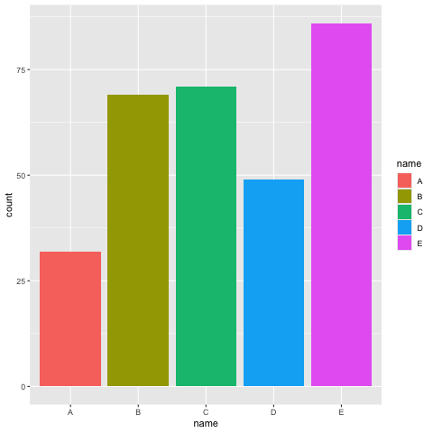
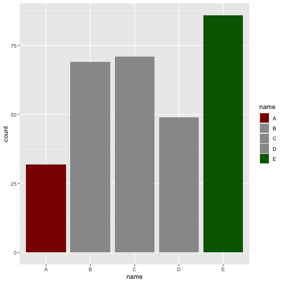
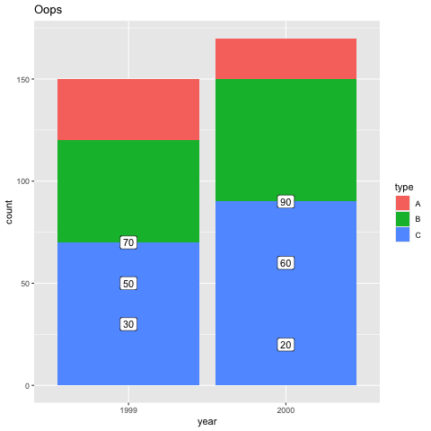
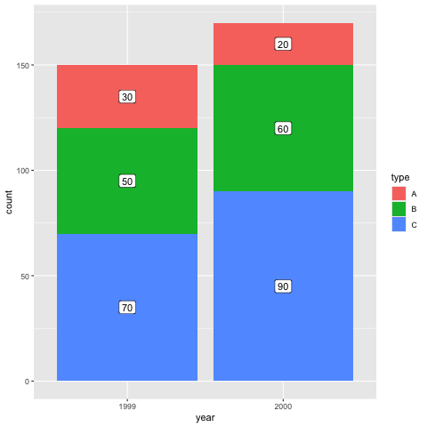
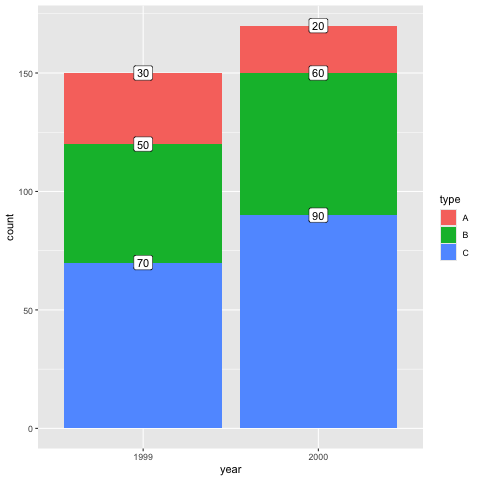
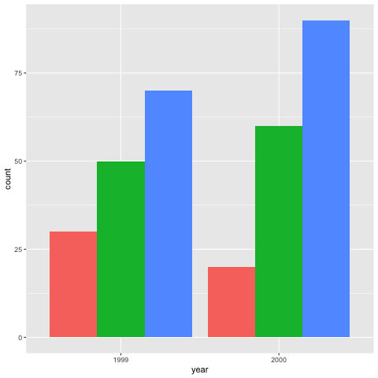
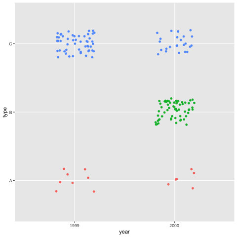
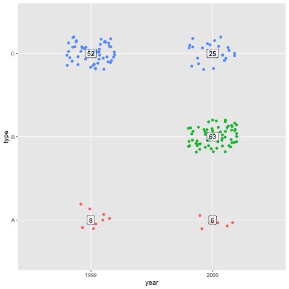
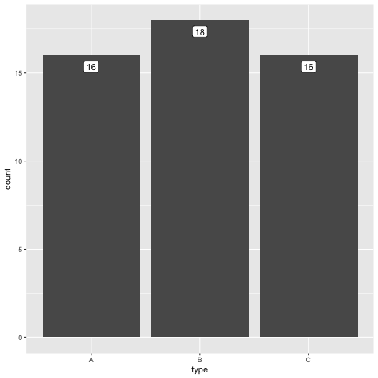

An imperfect cookbook on ggplot
These notes began as personal "recipes" for doing simple things with ggplot in R. When I started preparing them to be shared, I realised they included some subpar advice.
After the first note turned into a post about how not to do things (Positioning labels on a stacked bar chart, see below), I changed my approach. Rather than aiming for "best practice," these notes now reflect my own learning process in R.
I’m sharing them in the hope that other (especially beginner-to-intermediate) R users might learn from them. So please take them for what they are: scribbles on my own exploration of how (not) to do things in R.
1. Bar chart highlighted lowest and highest bars
1.1. Bar chart with colours
A bar graph that highlights the highest & lowest values? We can use
scale_fill_manual() for colours and add labels to the same bars.
First, some data.
library("tidyverse")
library("ggplot2")
df <- data.frame(name = c("A", "B", "C", "D", "E"),
count = sample(20:100, size = 5))
| name | count |
|---|---|
| A | 46 |
| B | 91 |
| C | 73 |
| D | 23 |
| E | 68 |
The base bar chart is pretty straightforward.
Note that we already map a fill in the aes() definition, even
though it is not the colour we want. However, it’s crucial to make
this mapping, so that scale_fill_manual() can override it later.
g <- ggplot(df, aes(x = name, y = count, fill = name)) +
geom_col()
g

To add colours to only the highest and lowest values of the bar chart, we can create a separate vector.
colour_palette <- case_when(df$count == min(df$count) ~ "darkred",
df$count == max(df$count) ~ "darkgreen",
TRUE ~ "gray60")
colour_palette
gray60 darkgreen gray60 darkred gray60
This vector lists the colours we need to fill the bars with. We can now apply this to alter the filling of the bars, like so:
g +
scale_fill_manual(values = colour_palette)

That’s all there is to it! It’s obviously trivial to alter the
case_when() triage to create different custom colour palette.
1.2. Adding labels
To add labels to these bars, we can create a new variable in our dataframe.
df <- df |>
mutate(label = case_when(count == min(df$count) ~ count,
count == max(df$count) ~ count))
| name | count | label |
|---|---|---|
| A | 46 | |
| B | 91 | 91 |
| C | 73 | |
| D | 23 | 23 |
| E | 68 |
Next, we add geom_text() layer to our graph.
Our full graph then becomes:
ggplot(df, aes(x = name, y = count, fill = name, label = label)) +
geom_col() +
geom_text(vjust = -.8) +
scale_fill_manual(values = colour_palette)
2. Positioning labels on a stacked bar chart
How to create a stacked bar chart with correctly positioned labels. Or: creating the same plot twice.
Let’s start with some dummy data in long form.
library("tidyverse")
library("ggplot2")
df <- data.frame(year = c("2000", "2000", "2000",
"1999", "1999", "1999"),
type = c("A", "B", "C",
"A", "B", "C"),
count = c(20, 60, 90,
30, 50, 70))
| year | type | count |
|---|---|---|
| 2000 | A | 20 |
| 2000 | B | 60 |
| 2000 | C | 90 |
| 1999 | A | 30 |
| 1999 | B | 50 |
| 1999 | C | 70 |
In a normal stacked bar chart, labels will not be positioned correctly:
g <- ggplot(df, aes(x = year, y = count)) +
geom_col(aes(fill = type))
g +
geom_label(aes(label = count)) +
labs(title = "Oops")

The reason is pretty obvious, as geom_label() uses count as
y-value rather than stacking the labels.
To fix this, we can calculate y-values separately.
Let’s add a column to the data frame, like so:
- ensure the data is grouped by x-axis, so that you calculate for each bar of the bar chart,
- sort your date by both x-axis and fill grouping,
- calculate the middle height of each block as
cumsum(count) - count /2.
df2 <- df |>
group_by(year) |>
arrange(year, desc(type)) |>
mutate(label_y = cumsum(count) - count/2)
df2
| year | type | count | label_y |
|---|---|---|---|
| 1999 | C | 70 | 35 |
| 1999 | B | 50 | 95 |
| 1999 | A | 30 | 135 |
| 2000 | C | 90 | 45 |
| 2000 | B | 60 | 120 |
| 2000 | A | 20 | 160 |
This now plots nicely when we use the calculated y-values in the
aes() of geom_label().
g2 <- ggplot(df2, aes(x = year, y = count)) +
geom_col(aes(fill = type))
g2 +
geom_label(aes(label = count, y = label_y))

But wait… What about position_stack()
Oh no, I just found out there’s an even easier way to do this, by
giving position instructions to the geom_label(). It recognises
"stack" as instruction.
g3 <- ggplot(df, aes(x = year, y = count, group = type)) +
geom_col(aes(fill = type))
g3 +
geom_label(aes(label = count), position = "stack")

Note that we need to include aes(group = ), it ensures the groups
are stacked correctly (i.e. corresponding with the fill
instruction).
This positions the labels at the top of each stack, which doesn’t look
appealing, but we can set position also with a function:
position_stack(), where vjust = .5 centers the labels vertically.
g3 +
geom_label(aes(label = count),
position = position_stack(vjust = .5))

So let’s also learn about position_dodge()
To switch from a stacked bar plot to a multi bar plot, adjust
position to "dodge".
g4 <- ggplot(df, aes(x = year, y = count, group = type)) +
geom_col(aes(fill = type), position = "dodge", show.legend = F)
g4

To add, labels don’t forget to adjust position in the geom_label().
Adjust width value to the default column widths.
g4 +
geom_label(aes(label = count),
position = position_dodge(width = .9))
3. From summarized counts to a jittered dotplot
It’s sometimes nice to have a graph where each dot represents an
observation. That’s where geom_point() and especially
geom_jitter() shine. But how can we one dot per obseration when we
start from summarized data?
Let’s start with some dummy data.
library(tidyverse)
library(ggplot2)
# example data
df <- data.frame(year = c("2000", "2000", "2000",
"1999", "1999", "1999"),
type = c("A", "B", "C",
"A", "B", "C"),
n = c(6, 63, 25,
8, NA, 52))
| year | type | n |
|---|---|---|
| 2000 | A | 6 |
| 2000 | B | 63 |
| 2000 | C | 25 |
| 1999 | A | 8 |
| 1999 | B | |
| 1999 | C | 52 |
Our data already is in long format, but with summarized counts. To
transform it into one row per observation (i.e., a single row for each
count), we can use uncount().
Note that for uncount() to work, we need to filter out any NA
values.
dfu <- df |>
filter(!is.na(n)) |>
uncount(n, .id = "nr")
head(dfu, 10)
| year | type | nr |
|---|---|---|
| 2000 | A | 1 |
| 2000 | A | 2 |
| 2000 | A | 3 |
| 2000 | A | 4 |
| 2000 | A | 5 |
| 2000 | A | 6 |
| 2000 | B | 1 |
| 2000 | B | 2 |
| 2000 | B | 3 |
| 2000 | B | 4 |
This data frame, with one row per observation, can now be used in a ggplot.
g <- ggplot(dfu, aes(x = year, y = type)) +
geom_jitter(aes(colour = type), show.legend = FALSE,
width = .2, height = .2)
g

If we want to include a summarised total of counts per category, we
need to add labels from the summarised data frame by setting data =
df in geom_label().
g + geom_label(data = df, aes(label = n),
alpha = .5, show.legend = FALSE)

4. Using after_stat() to add labels to a bar chart
Once again, we need some dummy data first. Let’s whip up a dataframe with 50 observations of one variable.
library(tidyverse)
library(ggplot2)
df <- data.frame(type = sample(c("A", "B", "C"),
size = 50, replace = TRUE))
df$type <- factor(df$type)
str(df)
summary(df)
'data.frame': 50 obs. of 1 variable: $ type: Factor w/ 3 levels "A","B","C": 1 1 2 1 1 3 2 1 2 2 ... type A:16 B:18 C:16
When ggplot draws a plot, it calculates different values.
geom_bar() for example, only requires either x or y values and
will compute the other to draw the graph. These calculated statistics
can be accessed later.
Let’s start with a simple bar chart.
p <- ggplot(df, aes(x = type)) +
geom_bar()
p
To get an idea of what ggplot computes, we can take a look at the data
in the object it creates. Below, i = 1 indicates we want to look at
the first layer.
(Note that the options() line is only there so that the line width of
the output is long enough.)
options(width = 200)
layer_data(p, i = 1)
count prop x flipped_aes PANEL group y ymin ymax xmin xmax colour fill linewidth linetype alpha width 1 16 1 1 FALSE 1 1 16 0 16 0.55 1.45 NA #595959FF 0.5 1 NA 0.9 2 18 1 2 FALSE 1 2 18 0 18 1.55 2.45 NA #595959FF 0.5 1 NA 0.9 3 16 1 3 FALSE 1 3 16 0 16 2.55 3.45 NA #595959FF 0.5 1 NA 0.9
So the ggplot object we created, has a variable called count, and
that y has the same value.
We want to add labels with the values of count. To access these
values, we can use after_stat(), which allows the mapping of the
values to be delayed until after count has been calculated. So in
the aes(), we set label = after_stat(count).
Note that we also need to set stat = "count", to change the
statistical transformation the layer uses.
q <- p +
geom_label(aes(label = after_stat(count)),
stat = "count", vjust = 1.5)
q

Let’s take a look at the layer we just added.
options(width = 200)
layer_data(q, i = 2)
count prop x width flipped_aes PANEL group label y nudge_x nudge_y colour fill family size angle hjust vjust alpha fontface lineheight linewidth linetype 1 16 1 1 0.9 FALSE 1 1 16 16 0 0 black white 3.866058 0 0.5 1.5 NA 1 1.2 0.25 1 2 18 1 2 0.9 FALSE 1 2 18 18 0 0 black white 3.866058 0 0.5 1.5 NA 1 1.2 0.25 1 3 16 1 3 0.9 FALSE 1 3 16 16 0 0 black white 3.866058 0 0.5 1.5 NA 1 1.2 0.25 1
And we can see the label values have been added.
For more detailed information on after_stat(), see
https://yjunechoe.github.io/posts/2022-03-10-ggplot2-delayed-aes-1/.